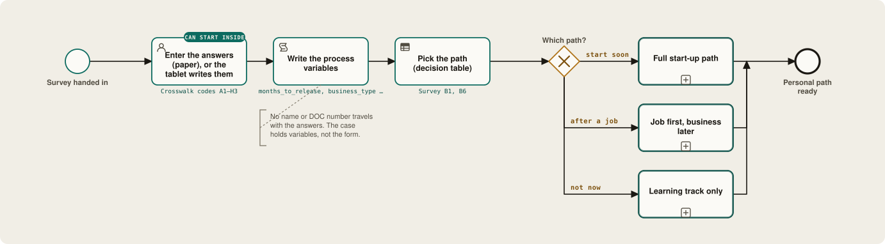

Readiness survey · draft for cognitive testing
Entrepreneurship Readiness Survey for incarcerated and returning citizens
This survey does two jobs at once. It tells a program what people inside want from entrepreneurship education, and it captures the facts that decide which path each person takes through the business start-up process: ID, banking, business entity, licences, taxes, money. Every question carries a short code; the crosswalk at the end maps each code to a step in the model.

Participants and staff
People currently incarcerated, or within about 24 months of release, take the main instrument. Facility and reentry staff take a short companion survey about what the facility can support: classes, internet, ID help, release planning.
20 to 25 minutes
Eight short sections, mostly check boxes. Check one unless it says "check all that apply". Every question can be skipped. Sections G and H can be dropped for a short version.
6th grade or below
Written plainly because literacy varies widely and because prisoners are a specially protected research population. Offer read-aloud by a non-staff volunteer, large print and a Spanish version.
Before fielding
Administration notes
The survey must be clearly voluntary, anonymous by default, and approved before it is used.
- If results will be published or used as research, get IRB review. Prisoners fall under federal human-subjects protections (45 CFR 46, Subpart C), which require that participation give no advantage or penalty in parole, good time or housing.
- Get written approval from the Department of Corrections or jail administration before fielding. Many facilities review every question.
- Say plainly that taking or skipping the survey has no effect on release, programs or privileges.
- Default to anonymous. No names or DOC numbers on the form. For follow-up, use a separate, detachable opt-in card.
- Do not ask about the person's offence, and never about undetected crimes. Ask only about record type where it affects licensing: felony versus misdemeanour, and the broad categories licensing boards screen for.
- Staff may see paper forms. Use sealed envelopes or a drop box not handled by correctional officers.
- Offer a read-aloud option by a non-staff volunteer, large print, and a Spanish version.
- Use check boxes over writing. Keep open-ended questions optional.
- Every question allows "I don't know" or "Prefer not to say".
- Target 20 to 25 minutes. Sections G and H can be dropped for a short version.
Check one box unless it says "check all that apply". Every question can be skipped.
AAbout you
BYour interest in running a business
If "Not at all", you can skip to Section G.
CPapers and ID
Most business steps need ID first. These questions help us know where to start.
DBanking and credit
ESkills, licenses, and your record
Some businesses need a state license. Some licensing boards look at criminal records. These questions help us know which paths are open.
FMoney and taxes
GHow you like to learn
HSupport and barriers
Optional, detach and hand in separately. ☐ I'd like to be contacted about a business class.
Name / DOC # (only on this card):
Companion
Staff and facility survey
One per facility, filled in by an education, reentry or program director. It tells you which steps can start inside and which must wait until after release.
Can tablets load a custom app or web course?
Crosswalk
From a survey code to a step in the model
Each survey answer becomes a process variable that either opens a subprocess, skips one, or feeds a decision table. ID comes first because nearly every later step — bank, EIN, licence, loan — depends on it. The same table is what the maps cite in their small "Survey …" notes.
| Code | Process variable | BPMN element | Effect on the path |
|---|---|---|---|
| A1 | months_to_release | Timer / start gateway | Under 12 months: start ID and banking tasks inside. Longer: education track only. |
| A2 | release_state, release_county | DMN input | Selects state-specific rules for licensing, LLC filing, sales tax, and local business licence. |
| A5, E5 | supervision, conditions_flag | Exclusive gateway | Adds a "check with parole/probation officer" user task before any business activity. |
| B1, B6 | interest_level, start_timing | Exclusive gateway | Routes to the full start-up path, "job first, business later", or learning only. |
| B3, B4 | business_type | DMN: licence required? | Looks up occupational licence, permit, and health or trade inspection requirements. |
| B5 | ownership_model | DMN: entity choice | Sole prop, single-member LLC, multi-member LLC/partnership, or worker co-op subprocess. |
| B7 | will_hire | Exclusive gateway | Adds employer tasks: EIN required, state withholding and unemployment accounts, workers' comp. |
| C1, C2 | has_ssn_card, has_birth_cert, has_valid_id | Subprocess: Obtain ID | Generates only the missing document tasks, in order (birth certificate, then SS card, then state ID). |
| C3 | license_suspended | Boundary event | Adds the reinstatement task; flags transportation as a barrier. |
| D1, D2 | banked_before, chex_risk | DMN: account type | Standard account, second-chance account, or credit-union referral. |
| D3, D4, D5 | credit_known, debts[], garnishment | Subprocess: Credit and debts | Pull the free credit report; child support and fines tasks; affects loan eligibility. |
| E1 | certs[] | Data object | Pre-fills experience for licence applications and microloan applications. |
| E3, E4 | record_class, record_categories[] | DMN: licensing barrier | Checks the release state's licensing rules (direct-relationship tests, pre-application determinations, waivers). |
| F1, F2 | capital_sources[], capital_need | DMN: funding path | Bootstrap, family, CDFI microloan, SBA microloan, or grant tasks. |
| F3, F4 | tax_history, tax_literacy | Subprocess: Taxes | Adds back-filing check, EIN, self-employment and quarterly tax education. |
| F5 | benefits[] | Exclusive gateway | Adds a benefits-counseling task so self-employment income does not cut off SSI, SNAP, or Medicaid unexpectedly. |
| G1–G5 | learning_prefs | Not routed | Shapes curriculum and delivery; feeds program design, not individual cases. |
| H1–H3 | barriers[], housing_stable, outside_support | Script task | Prioritizes referrals (housing, transportation, mentoring) before start-up tasks. |
Next steps
Before anyone fills this in
- Cognitive-test the survey with 5 to 8 formerly incarcerated people; fix any question they read differently than intended.
- Run a readability check and aim for 6th grade or below.
- Pick the first release state and build its decision tables (licensing, entity filing, local business licence). Virginia's licensing-barrier table is the first draft.
- Decide paper versus tablet. Paper needs a data-entry step; a tablet form can write process variables directly.
- Contact the DOC research office and an IRB about approval timelines.
- Partner with a reentry group and a CDFI or credit union for the banking and microloan branches.
Read it aloud to someone
If you run a reentry program, teach inside, or have been through release yourself, we would like to know which questions read wrong, which are missing, and how long it really takes. hello@doingprocess.org